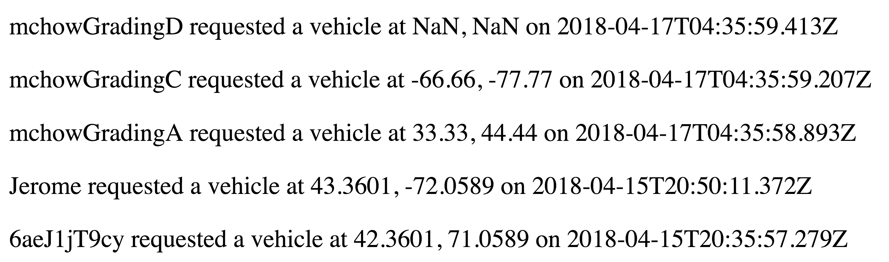
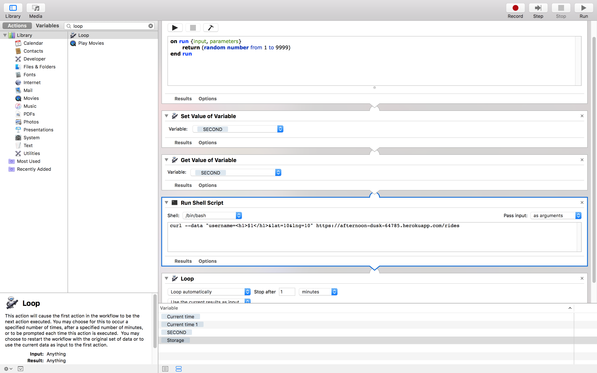
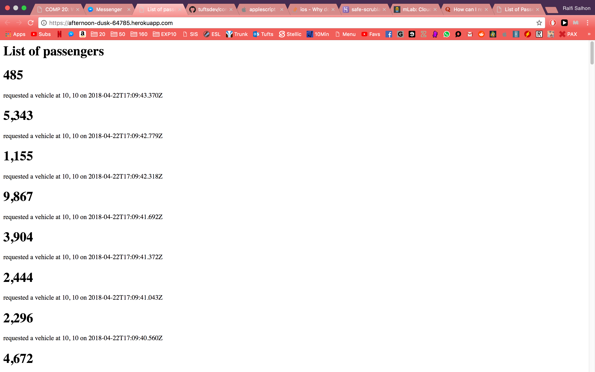
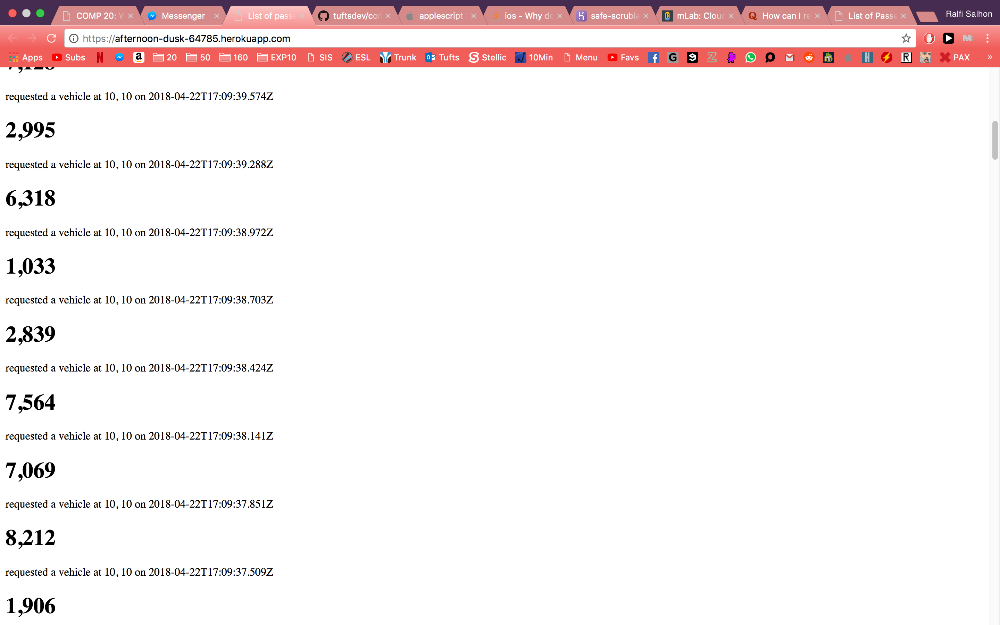

Hi, my name is Ralfi. I was hired as a security consultant to document and resolve the security and privacy issues in the application https://afternoon-dusk-64785.herokuapp.com/ by Nimish Adhikari. It bothers me to say that this application was riddled with security and privacy vulnerabilities. I have documented my findings below.
To conduct my tests, I have used the curl tool from my terminal. Below is an example of a sample input that would work in the given application:
curl --data "username=USERNAME_HERE&lat=LAT_HERE&lng=LNG_HERE" https://afternoon-dusk-64785.herokuapp.com/rides
I have noticed that the username tag could be easily exploited, as the input was not sanitized and not parsed. I discovered many vulnerabilities from the username tag alone, and those will be the only vulnerabilities discussed in this assessment, but expect that this application has many more problems than those listed below.
This application has been designed to function correctly, but it has trusted user-input to be concise and correct in order to do so. It has no intentions to protect against malicious behaviour. By plainly displaying my inputs on its index page, it is possible to load various scripts to disrupt the application's functioning, as well as access user information that should otherwise be private. I managed to display alerts, load pictures instead of usernames, access all passenger information from the index page, and momentarily crash the website with a bash script attack by abusing this principle.
Below is a screenshot from the application's index page, where an image is passed as a username rather than the expected input of a username:

The severity of cross site scripting is HIGH, because malicious scripts could be injected to steal user data and access cookies from browsers. In this example, I only displayed an img source as the username, but I easily could've injected more complicated scripts that could completely disfunction the application and steal user information.
This problem can be avoided if the input is sanitised. Upon looking at the source code, I see that on line 64 the username input is plainly accepted, not checking for any malicious intentions.
Line 64: var username = request.body.username;
This issue is about user privacy. The home page lists all passenger data with sensitive information such as their username tag, their location, and their timestamp of using the app.
You can see a screenshot of data that I easily accessed from the main page:
The severity of this scripting issue is MEDIUM, because user-data can be stolen and users can be easily tracked with the location data publicly displayed.
This problem can be avoided by making user-data to be not publicly accessible.
This issue concerns the upkeep of the application. The server makes no checks or takes no precautions to prevent a denial-of-service attack, which is a "cyber-attack in which the perpetrator seeks to make a machine or network resource unavailable to its intended users by temporarily or indefinitely disrupting services of a host connected to the Internet" (Wikipedia).
I wrote the following BASH script from Mac Automator that sent a ride request with a random username hundreds of times a second:
This is the result from the application after running the script for a few seconds, and please mind that the server was unresponsive for a couple minutes before the web page was back up:
 The severity of this scripting issue is LOW (but potentially HIGH!), because the attack needs to be severely powerful to take down this application, which in its current state should not be of concern to such powerful attacks.
This problem can be avoided by working with companies that work with DOS protection for your website. Consider limiting the amount of user-input allowed from a single machine to make yourself less prone to these attacks.
This application in its current state is unfortunately prone to many attacks and those with malicious intentions can easily steal and manipulate user-data. I would advise starting by sanitising user input, and making user-data private to solve many of the bigger problems. For the rest, I would advise working with a web developer proficient in web security in order to rebuild the application to be less prone to such attacks.
My only reference for this report has been Mr. Chow's COMP20 classes from Tufts University.
For the definition of a DOS attack, I have referenced https://en.wikipedia.org/wiki/Denial-of-service_attack